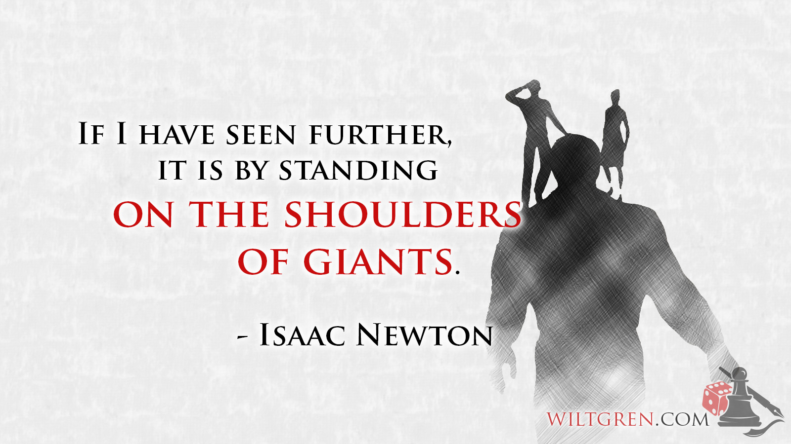

Study notes
James Solomon-Rounce
Last updated:2017-04-17
Preface
The following notes were taken by me for educational, non-commercial, purposes. If you find the information useful, buy the material/take the course.
Thank you to the original content providers for helping us to ‘Stand on the Shoulders of Giants’. Additional ramblings are my own.
